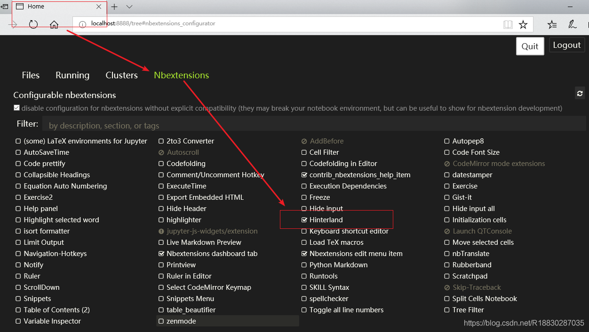

# jupyter 官方容器关系图，供选择时参考
https://jupyter-docker-stacks.readthedocs.io/en/latest/using/selecting.html#image-relationships
经测试，base、minimal 等容器开启后的默认状态（不启动 Python 等内核）内存消耗都差不多，都是 85M 左右。
所有的容器默认启动 JupyterLab ，要改回传统的 Notebook ，需要指定变量 DOCKER_STACKS_JUPYTER_CMD 参数来启动：
| DOCKER_STACKS_JUPYTER_CMD | 后端 | 前端 |
|---|---|---|
| lab (default) | Jupyter Server | JupyterLab |
| notebook | Jupyter Notebook | Jupyter Notebook |
| nbclassic | Jupyter Server | Jupyter Notebook |
| server | Jupyter Server | None |
| retro* | Jupyter Server | RetroLab |
容器内工作目录为： /home/jovyan/work ，可通过自定义环境变量来变更。
自定义密码：https://jupyter-docker-stacks.readthedocs.io/en/latest/using/common.html#jupyter-server-options
中文包pip install jupyterlab-language-pack-zh-CN
# Notebook 相关
# 安装主题
pip install jupyterthemes
# 更新主题
pip install --upgrade jupyterthemes
# 查看可用主题
jt -l
# 我个人喜欢亮一点的背景主题，于是选择了 grade3，它还支持语法高亮。下面是我的背景主题设置：
jt -t grade3 -f fira -fs 13 -cellw 90% -ofs 11 -dfs 11 -T -N

-f (字体) -fs (字体大小) -cellw (占屏比或宽度) -ofs (输出段的字号) -T (显示工具栏) -N (显示自己主机名)
# 2. 代码自动补全
# 首先安装 nbextensions：
pip install jupyter_contrib_nbextensions
jupyter contrib nbextension install --user
# 然后安装 nbextensions_configurator：
pip install jupyter_nbextensions_configurator
jupyter nbextensions_configurator enable --user
如果提示缺少依赖，就使用 pip 安装对应依赖即可。
# 最后重启 jupyter
在弹出的 Home 面里，能看到增加了一个 Nbextensions 标签页，在这个页面里，勾选 Hinterland 即启用了代码自动补全，如图所示：

主题效果图：
https://www.cnblogs.com/shanger/p/12006161.html
# 重启 jupyter 内核不会重启容器
-e RESTARTABLE=yes
# 最高权限运行
-e GRANT_SUDO=yes --user root
datascience
The jovyan user does not have a password set with sudo access by default in order to avoid the case where a user starts a container from the image on a public host. However, there is an environment variable named GRANT_SUDO that can be passed to the container to do just that.
If you want to run the image from docker and give joyvan sudo then:docker run -it --rm -p 8888:8888 -e GRANT_SUDO=yes --user root gcr.io/kubeflow-images-staging/tensorflow-notebook-cpu
docker run -itd --name=datascience -p 8888:8888 -e RESTARTABLE=yes -e GRANT_SUDO=yes --user root -e DOCKER_STACKS_JUPYTER_CMD=notebook datascience:v1
docker run -itd --name=datascience -p 8888:8888 -e RESTARTABLE=yes -e GRANT_SUDO=yes --user root -e DOCKER_STACKS_JUPYTER_CMD=notebook -e LANG=zh_CN -e LC_ALL=zh_CN -e LANGUAGE=zh_CN datascience:v1
配置文件路径:
/home/jovyan/.jupyter/jupyter_notebook_config.py
语言文件目录
/opt/conda/lib/python3.10/site-packages/notebook/i18n
# 选择 JupyterLab
lab 具有更方便的布局、更完善的插件支持等等，改用 lab。
自行构建可参考：https://www.cnblogs.com/ulysessweb/p/14317515.html
关键是 apt-get 安装库文件之前使用 USER root 来使用 root 权限进行安装，否则安装不了，库文件安全之后，改回官方提供的默认用户 USER $NB_UID 进行 Python 包安装
# 完整构建 Dockerfile 及其镜像地址
hub.docker.com/blackelks/jupyterlab-datascience
FROM jupyter/datascience-notebook
# 安装lsp自动补全插件、excel查看插件,中文语言包、 onedarkpro主题、 创建硬链接（lsp官方推荐）
RUN pip install --no-cache-dir jupyterlab-language-pack-zh-CN jupyterlab-lsp 'python-lsp-server[all]' jupyterlab-drawio jupyterlab_execute_time pyinstall openpyxl xlrd XlsxWriter xlutils xlwings xlwt pdfminer python-docx docx2pdf pyexecjs selenium aiohttp httpx feapder[all] beautifulsoup4 requests lxml html5lib playwright matplotlib_inline opencv-python matplotlib pyecharts scipy plotly wordcloud flask django fastapi psycopg2-binary pymongo sqlalchemy pymysql pandas geopandas jieba tqdm unzip ddddocr loguru lars -i http://pypi.douban.com/simple/ --trusted-host pypi.douban.com&& \
playwright install && ln -s / .lsp_symlink
RUN jupyter labextension install jupyterlab_onedarkpro
RUN jupyter labextension install jupyterlab-spreadsheet
# 设置显示语言为中文
RUN mkdir -p /home/jovyan/.jupyter/lab/user-settings/@jupyterlab/translation-extension/ && echo '{"locale":"zh_CN"}'>/home/jovyan/.jupyter/lab/user-settings/@jupyterlab/translation-extension/plugin.jupyterlab-settings && \
# 不接收新闻
mkdir -p /home/jovyan/.jupyter/lab/user-settings/@jupyterlab/apputils-extension/ && echo '{"fetchNews": "false"}'>/home/jovyan/.jupyter/lab/user-settings/@jupyterlab/apputils-extension/notification.jupyterlab-settings && \
# 启用插件
mkdir -p /home/jovyan/.jupyter/lab/user-settings/@jupyterlab/extensionmanager-extension/ && echo '{"disclaimed": true}'>/home/jovyan/.jupyter/lab/user-settings/@jupyterlab/extensionmanager-extension/plugin.jupyterlab-settings && \
# 设置默认主题为JupyterLab Dark----the one of two default themes.
echo '{"theme": "JupyterLab Dark"}'>/home/jovyan/.jupyter/lab/user-settings/@jupyterlab/apputils-extension/themes.jupyterlab-settings && \
# 开启自动补全
mkdir -p /home/jovyan/.jupyter/lab/user-settings/@krassowski/jupyterlab-lsp && echo '{"continuousHinting": true}'>/home/jovyan/.jupyter/lab/user-settings/@krassowski/jupyterlab-lsp/completion.jupyterlab-settings && \
# 设置默认开启自动框号补全等
mkdir -p /home/jovyan/.jupyter/lab/user-settings/@jupyterlab/notebook-extension/ && \
echo '{"codeCellConfig":{"autoClosingBrackets":true,"lineNumbers":true,"codeFolding":true,},"experimentalDisableDocumentWideUndoRedo":true,"kernelShutdown":true,"kernelStatus":{"showOnStatusBar":true,"showProgress":true},"markdownCellConfig":{"autoClosingBrackets":true,"lineNumbers":true,"lineWrap":"on","matchBrackets":true,"codeFolding":true,},"rawCellConfig":{"autoClosingBrackets":true,"lineNumbers":true,"lineWrap":"on","matchBrackets":true,"codeFolding":true,},"recordTiming":true}'>/home/jovyan/.jupyter/lab/user-settings/@jupyterlab/notebook-extension/tracker.jupyterlab-settings
# `jupyterlab-variableInspector`帮助我们在`jupyter lab`中查看当前环境中存在的变量相关信息，
# 以美观的界面形式对多种类型的对象予以呈现。
# https://cloud.tencent.com/developer/article/1971947
RUN pip install lckr-jupyterlab-variableinspector
# jupyterlab-system-monitor通过在jupyter lab界面中添加资源监视器部件，
# 能帮助我们在工作过程中方便的看到CPU、内存的实时占用情况
RUN pip install nbresuse && \
jupyter labextension install jupyterlab-topbar-extension jupyterlab-system-monitor
# docker run -itd --name=lab -p 8888:8888 -e CHOWN_HOME=yes -e NB_UID=1000 -e NB_GID=1000 -e RESTARTABLE=yes -e GRANT_SUDO=yes --user root docker.io/blackelks/jupyterlab-datascience:latest
# 补充库:faker 代码格式化、black isort
RUN pip install --no-cache-dir faker jupyterlab-code-formatter black isort -i http://pypi.douban.com/simple/ --trusted-host pypi.douban.com
# 代码格式化插件设置
RUN mkdir -p /home/jovyan/.jupyter/lab/user-settings/@ryantam626/jupyterlab_code_formatter/ && echo '{"preferences":{"default_formatter":{"python":["isort","black"],}},"black":{"line_length":88,"string_normalization":true},"yapf":{"style_config":"google"},"autopep8":{"max_line_length":120,"ignore":["E226","E302","E41"]},"isort":{"multi_line_output":3,"include_trailing_comma":true,"force_grid_wrap":0,"use_parentheses":true,"line_length":88},"formatOnSave":true,"astyle":{"args":[]},"suppressFormatterErrors":false}'>/home/jovyan/.jupyter/lab/user-settings/@ryantam626/jupyterlab_code_formatter/settings.jupyterlab-settings
# 新增插件`ipydatagrid`：https://github.com/bloomberg/ipydatagrid
RUN pip --no-cache-dir install ipydatagrid -i http://pypi.douban.com/simple/ --trusted-host pypi.douban.com
# 下载ipydatagrid的示例文件到工作目录
RUN git clone https://github.com/bloomberg/ipydatagrid.git \
&& mkdir -p ipyDataGrid示例 \
&& mv ipydatagrid/examples/* ipyDataGrid示例 \
&& rm ipydatagrid -rf
# 安装darcula主题并激活，为了不费时的重复构建，使用此层覆盖前面的主题设置
RUN pip install theme-darcula \
&& echo '{"theme":"Darcula","theme-scrollbars":true}'>/home/jovyan/.jupyter/lab/user-settings/@jupyterlab/apputils-extension/themes.jupyterlab-settings